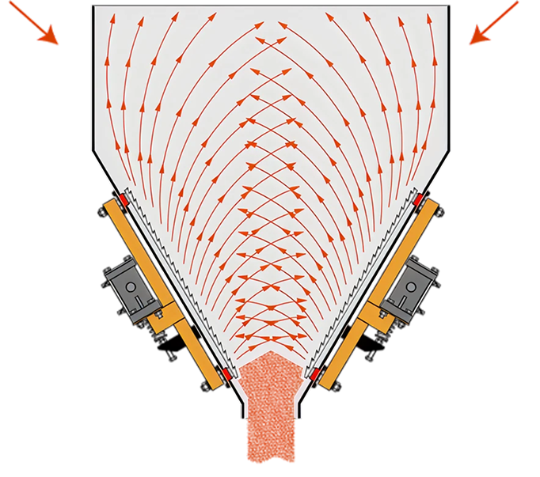

BA consists of internal cone shaped baffle which is attached to the body rigidly by means of structural member. The unit is suspended by means of hanger bolts from the bottom of the hopper or silo
BA moves horizontally in response to centrifugal forces generated by unbalance weights of an attached vibrator. The cone baffle relieves the weight of the material from the lower section of the bin discharger and acts like a wedge and push the material down to all directions adjacent to the cone surface.
Principle Operations